Необходимо автоматизировать торговую организацию.
Структурно компания состоит из администрации и отдела продаж, который в свою очередь разделен на оптовый и розничный отдел.
Для ведения кадрового учета необходимо хранить список сотрудников организации. Для каждого сотрудника необходимо иметь возможность указать сведения о его квалификации (где и когда он обучался), а так же сведения о его детях (Рис. 2.1). Назначение сотруднику оклада или перевод его в какое-либо подразделение отражаются документом "Кадровый приказ".
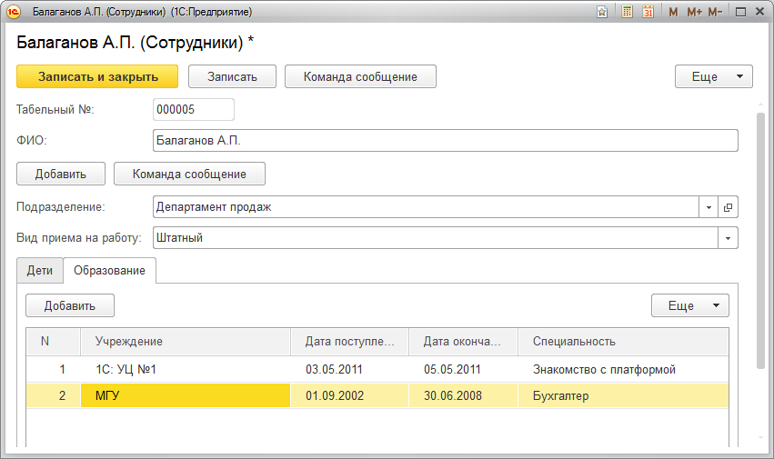
Рис. 2.1.
Основная деятельность компании заключается в закупке и дальнейшей продаже товаров и оказания сопутствующих услуг. Необходимо вести перечень используемых товаров и услуг; поставщиков и покупателей. Все взаиморасчеты с контрагентами ведутся в разрезе договоров.
Оплата товара поставщику отражается документом "Списание денежных средств", поступление товаров документом "Приходная накладная". Следует предусмотреть возможность выплаты денежных средств не только поставщику, но и сотруднику компании.
Отгрузка товара покупателю отражается документом "Расходная накладная" (Рис. 2.2), а его оплата документом "Поступление денежных средств" (Рис.2.3). Для документа "Расходная накладная" необходимо иметь возможность сформировать печатную форму.
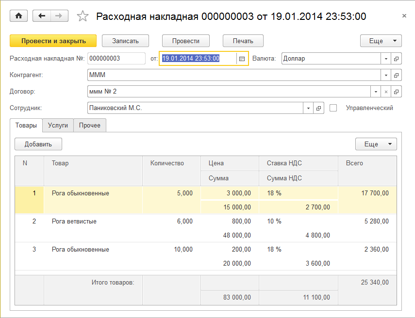
Рис. 2.2.
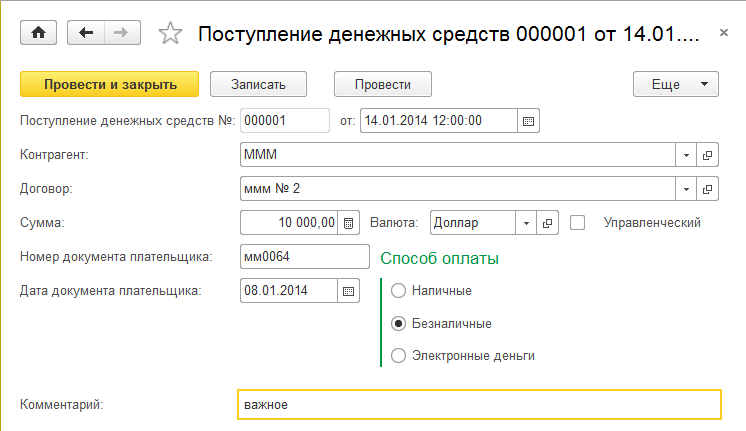
Рис. 2.3.
При продаже товаров в компании может возникнуть необходимость вести валютный учет. Данная возможность должна являться дополнительной, то есть подключаться или отключаться при необходимости.
Для анализа деятельности компании необходимо иметь возможность узнать в разрезе сотрудников в текущем месяце, на какую сумму было произведено продаж (Рис. 2.4).
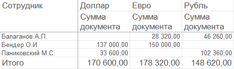
Рис. 2.4.
Система программ "1С:Предприятие 8.2" включает в себя платформу и прикладные решения, разработанные на ее основе, для автоматизации деятельности организаций и частных лиц. Сама платформа не является программным продуктом для использования конечными пользователями, которые работают с прикладным решением (конфигурацией), разработанным на данной платформе. Соответственно, система имеет два режима работы: 1С:Предприятие (пользовательский режим) и Конфигуратор (предназначен для разработчиков прикладных решений и администраторов информационных баз данных). Поскольку именно в режиме конфигуратора и происходит модификация существующих и создание новых конфигураций, то именно этот режим и будет использован нами в первую очередь.
Первое, что нам необходимо сделать для решения предлагаемой учебной задачи, это создать новую информационную базу. Для этого на диске "С:\" создадим каталог "\Знакомство с платформой", после чего запускаем систему "1С:Предприятие". На экран будет выведен диалог "Запуск 1С:Предприятия" (Рис.2.5).
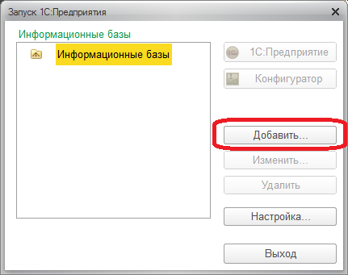
Рис. 2.5.
Создадим новую информационную базу, нажав кнопку "Добавить". Далее следуем инструкциям, появляющимся на экране. Поскольку создаем новую базу, в первом окне оставляем верхний вариант (Рис. 2.6).
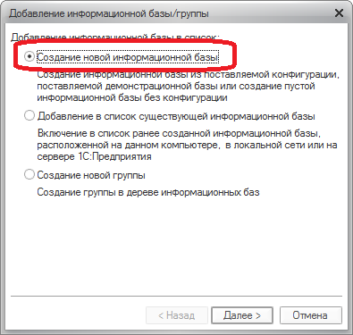
Рис. 2.6.
Далее необходимо указать, что создается новая пустая база, а не типовая из шаблона, для чего выбираем нижний вариант (Рис 2.7).
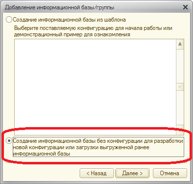
Рис. 2.7.
Следующее, что необходимо сделать, это дать имя создаваемой базе. В нашем случае назовем базу "Знакомство с платформой" (Рис. 2.8).
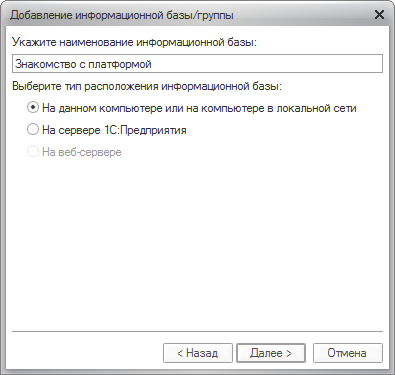
Рис. 2.8.
После этого необходимо указать, где будут храниться данные, содержащиеся в нашей информационной базе. Для этого ранее нами была создана специальная папка, которую теперь необходимо указать в настройках (Рис. 2.9).
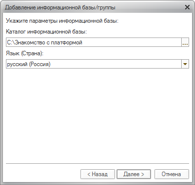
Рис. 2.9.
В следующем окне оставляем параметры запуска по умолчанию (Рис. 2.10) и на этом создание новой информационной базы будет завершено.
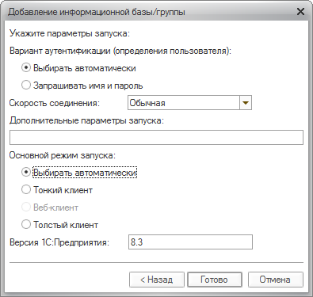
Рис 2.10.
Теперь после запуска "1С:Предприятия" у нас появится возможность работать с новой информационной базой (Рис. 2.11), причем в обоих режимах, выбор которых будет осуществляться нажатием на соответствующие кнопки "1С:Предприятие" или "Конфигуратор".
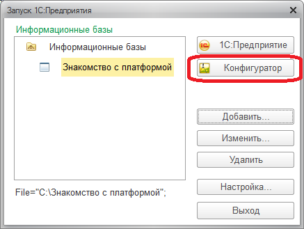
Рис. 2.11.
Так как в нашей базе отсутствует структура для хранения какой-либо информации, то необходимо создать такую структуру, для чего необходимо открыть информационную базу в режиме конфигуратора. В открывшемся окне откроем окно "Конфигурация". Для этого выберем пункт меню Конфигурация-Открыть конфигурацию (Рис. 2.12).
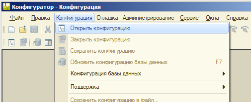
Рис. 2.12.
Открывается новое окно (Рис. 2.13):
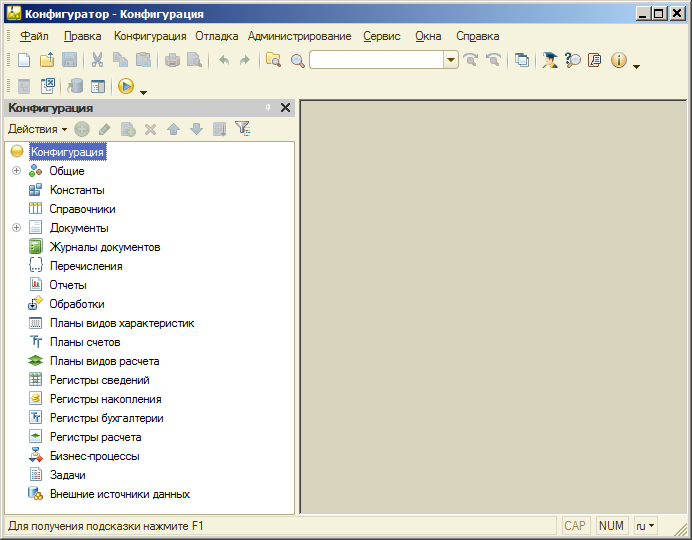
Рис. 2.13.
Данное окно называется окном конфигурации, а содержащаяся в нем информация – деревом конфигурации.